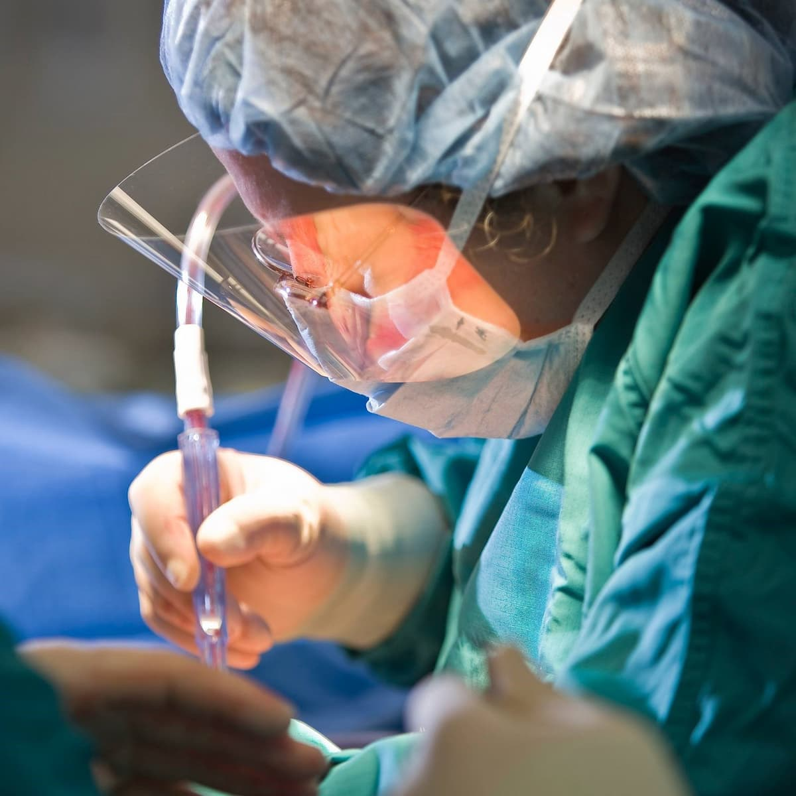

طب العيون في تركيا
يمكنكم الإطلاع على احدث التقنيات العلاجية في طب العيون في تركيا , تمتلك تركيا العديد من المستشفيات الطبية الحديث والتي تمتلك احدث الاجهزة الطبية والكوادر الطبية الخبيرة التي جعل من تركيا دولة مميزة في طب العيون

خطوات عملية المياه البيضاء على العين: نتائجها وتكاليفها في تركيا
سنتعرف في هذا المقال على شرح خطوات عملية المياه البيضاء على العين وأنواع العدسات ونصائح قبل وبعد العملية ومعلومات شاملة حول العملية.
جدول المحتويات
- مقدمة عن عملية المياه البيضاء في العين
- شرح خطوات عملية المياه البيضاء في العين
- مابعد عملية المياه البيضاء
- نتائج عملية المياه البيضاء في تركيا
- تكلفة عملية المياه البيضاء في تركيا
- اعراض بعد عملية المياه البيضاء
- كثرة الدموع بعد عملية المياه البيضاء
- نزيف العين بعد عملية المياه البيضاء
- الم شديد بعد عملية المياه البيضاء
- حرقان العين بعد عمليه المياه البيضاء
- العين حمراء بعد عملية المياه البيضاء
- جفاف العين بعد عملية المياه البيضاء
- زغللة العين بعد عملية المياه البيضاء
- صداع بعد عملية المياه البيضاء
- رؤية ضبابية بعد عملية المياه البيضاء
- ضعف النظر بعد عملية المياه البيضاء
- ضغط العين بعد عملية المياه البيضاء
مقدمة عن عملية المياه البيضاء في العين
تساعد العدسات الطبيعية الموجودة في أعيننا على الرؤية السليمة عبر عكسها للأشعة الضوئية الساقطة على الأعين وهذه العدسات يجب أن تكون واضحة وسليمة ، إذا كان لديك المياه البيضاء في عدسة العين فستصبح العدسة ضبابية ، مما يؤثر بشكل كبير على القدرة على الرؤية الصحيحة ، يمكن إزالة إعتام عدسة العين مع الجراحة ، وتتعدد طرق العمليات الجراحية الممكنة وسيختار الطبيب العملية المناسبة بناءا على التشخيص المسبق ، ومن أنواع العمليات استحلاب العدسة و الجراحة خارج المحفظة والجراحة داخل المحفظة.
شرح عملية المياه البيضاء على العين
- إذا كانت حالة المياه البيضاء في كلتا العينين لن تجرى العملية بوقت واحد ، فمن الشائع أن يتطور إعتام عدسة العين أسرع في عين واحدة من الأخرى ، وبالتالي سيتم علاج العين الأكثر تضررًا أولاً وبفارق أسابيع بين العمليتين ، أي لحين إنتهاء شفاء العين الأولى.
- تتضمن جراحة إعتام عدسة العين إزالة العدسة المصابة بالمياه البيضاء واستبدالها بعدسة اصطناعية واضحة ، بعد ذلك يتم وضع العدسة الاصطناعية في نفس المكان الذي توجد فيه العدسة الطبيعية .
- بالنسبة لبعض الأشخاص تمنع اضطرابات الأخرى للعين استخدام العدسة الاصطناعية ، في هذه الحالات بمجرد إزالة إعتام عدسة العين قد يتم تصحيح الرؤية باستخدام النظارات الطبية أو العدسات اللاصقة.
- جراحة الساد آمنة بشكل عام، ولكنها تنطوي على خطر العدوى والنزيف و تزيد من خطر انفصال الشبكية.
- بعد العملية ربما ستشعر بعدم الراحة لبعض أيام. الشفاء بشكل عام يتم خلال 8 أسابيع.
متى يجب عمل عملية المياه البيضاء
يجب التواصل مع طبيب العيون حول ما إذا كانت الجراحة مناسبة أم لا ، يقترح معظم أطباء العيون التفكير في جراحة إعتام عدسة العين عندما تبدأ إعتام عدسة العين في التأثير على طبيعة حياة المريض أو تتداخل مع قدرته على أداء الأنشطة اليومية العادية مثل القراءة أو القيادة في الليل ، وربما يميل البعض لعدم الحاجة للقيام للعملية لعدم تطور الحالة لكن يجب الإنتباه إلى أن الساد العيني قد يتطور بسرعة إن كان سببه يعود إضطرابات مرضية ، بالتالي يجب التفكير مليا بمزايا ومخاطر عملية المياه البيضاء مع الطبيب ، في حال تم تفضيل عدم القيام بالعملية فيجب القيام بفحص دوري مع الطبيب للتأكد من عدم سوء الحالة وتقدم الساد العيني.

تعليمات قبل عملية المياه البيضاء في العين
- إجراء تقييم للعين ومدى مستوى تقدم الحالة المرضية فيها
- تقييم الوظيفة البصرية بشكل مركز
- إخبار المريض بطرق العلاج الأخرى
- القيام بفحص مقياس تحدب القرنية لتحدد مدى الخطأ الإنكساري عبر قياس نصف القطر لإنحناء السطح الأمامي للقسم البصري المركزي للقرنية
- فحص القناة الدمعية للتأكد من عدم وجود مضاعفات لما بعد العلمية
- إجراء تقييم سطح العين
- التأكد من عدم وجود تحسس للمواد المكونة للمخدر الموضعي
- يجب إعلام الطبيب في حالة وجود حمل.
الجديد في عمليات المياه البيضاء
الأدوات الجديدة المستعملة في داخل العملية تساعد الطبيب على إجراء العملية بشكل أسرع وأسهل وينقص إحتمالية حدوث مضاعفات بعض العملية ومن بين هذه الأجهزة:
- جهاز الفيمتو ثانية الليزي والمستخدم كمساعد في جراحة الساد العيني ، وقد ظهر قبل مايقارب 10 أعوام ويمكن له التأثير بشكل كبير على مدى دقة التموضع النهائي للعدسة وميلانها.
- جهاز بضع المحفظة النبضي الدقيق والذي يدعى زيبتو ويتكون من إطار لمركب النيتينول ذو الهندسة النانوية والتي تسمح له بتشكيل مايشبه الذاكرة الشكلية و ذات مرونة كبيرة مما يسمح بتكوين إستدارة مثالية لبضع المحفظة.
- بضع الليزر الإنتقائي: بإستخدام ليزر غير ملامس لإيصال نبض مستمر من الطاقة الحرارية مكونا بضع دائري للمحفظة خلال ثانية واحدة.
- البضع الحراري المستمر في الفحوصات قبل السريرية، و يستخدم طاقة حرارية التي تذيب الكولاجين في المحفظة الأمامية والقادر على تكوين بضع محفظة بسمك 4.5 إلى 6.5 ملم.
- كما ساعدت أدوات القياس والتصور الجديدة داخل العملية على تحسين جراحة إعتام عدسة العين. على سبيل المثال، جهاز أبيرومتري يعطي الجراحين معلومات أكثر دقة حول قوة العدسة والموضع،
شرح خطوات عملية المياه البيضاء في العين
- تجري عملية جراحة المياه البيضاء بشكل عام في العيادات الخارجية والتي تعني إنك لن تضطر للبقاء في المشفى بعد العملية ، خلال العملية سيقوم الطبيب بتخديرك موضعيا بالمنطقة حول العين، ستبقى مستيقظا خلال العملية.
- سيقوم الجراح بإخذ العدسة المصابة بالمياه البيضاء ويستبدلها بالعدسة الإصطناعية (بعد القيام بالتصوير المقطعي للعين لأخذ الأبعاد المناسبة للعدسة الصناعية ) وذلك بإستخدام أحد طرق العمليات التالية:
- استحلاب العدسة: يتم إجراء شق صغير في الجزء الأمامي من العين، ومن ثم سيتم إستخدام أداة تنبعث منها موجات الموجات فوق الصوتية لكسر العدسة لأجزاء لإزالة المياه البيضاء، و من ثم يتم زرع عدسة جديدة بمجرد إزالة الساد العيني.
- استحلاب العدسة بمساعدة جهاز فيتمو ثانية: إجراء مساعدة يستخدم لبناء شقوق قرنية بهدف تصحيح النظراللابؤري وبإجراء بضع للمحفظة وتجزأت النواة ، ويتم فيه تشكيل بناء الشق بشكل أفضل ومركزي ووضع العدسة بشكل مركزي داخل العين.
- الجراحة خارج محفظة العين: يتم إجراء شق طويل في القرنية ويتم إزالة العدسة الطبيعية مع الساد العيني ، ثم يتم استبدال العدسة الطبيعية بعدسة اصطناعية توضع في العين، وهناك أيضا اختلاف بالأساليب باستخدام الشق المجهري أو الليزر للشفاء بشكل أسرع ومضاعفات أقل.
- الجراحة داخل المحفظة: هذه أقدم طريقة جراحة للمياه البيضاء وهي أقل طريقة تستخدم حاليا ، وهي تحوي أعلى نسبة مضاعفات بسبب حجم الأداة المستخدمة لعمل الشق. ويتم فيها إزالة العدسة ومحفظة العدسة المحيطة على شكل قطعة واحدة.
- تستغرق العملية للعين الواحدة مايقارب 15 إلى 30 دقيقة.
أنواع العدسات فى عملية المياه البيضاء
لعلاج إعتام عدسة العين يجب إزالة منطقة العدسة التي فقدت شفافيتها واستبدالها بعدسة جديدة شفافة داخل العين والتي ستبقى في عين المريض إلى الأبد ، وقبل تطور العدسات المخصصة للزرع داخل العين IOLs كان التصحيح الوحيد للرؤية بعد عملية المياه البيضاء بإستخدام العدسات اللاصقة الصلبة أو النظارات السميكة ، أول عملية زرع لهذه العدسات المخصصة تم في لندن عام 1949 م ، ومن ذلك الوقت لم تتوقف العدسات المخصصة عن التطور والتحسن. وتتشكل العدسات المخصصة من مواد خاملة مثل السليكون والأكريليك . وبنفس مبادئ العدسات اللاصقة العادية فتسمح العدسات المخصصة بدخول الضوء عبرهم للتركز عشكل صورة في الشبكية ، ولا يتم إستعمال نفس النوع لجميع المرضى إنما بناء على حاجة كل مريض. ومن أنواع العدسات المخصصة:
- العدسات أحادية الرؤية: تم تصميم هذا النوع من عدسة العين إما لرؤية قريبة أو عن بعد ، إذا كان لديك هذا النوع ربما تحتاج أيضا إلى ارتداء النظارات ، على سبيل المثال من الشائع أن يتم اختيار IOLs لتوفير رؤية أفضل عن بعد بشكل أفضل ثم يتم استخدام النظارات لتحسين الرؤية القريبة ، بالإضافة يوجد نوع يدعى العدسات شبه الكروية وهي عدسات أحادية البؤرة تصحح الانحراف الكروي ، والنتيجة هي عدسة توفر رؤية شاملة أفضل من عدسات باطن العين التقليدية خاصة في الليل.
- العدسات المصححة للنظر اللابؤري Toric: وتزرع لتصحيح الرؤية في حالة استجماتيزم ، بشكل عام هذا النوع من العدسات أكثر تعقيدا من عدسات الأحادية الرؤية أو البؤرة.
- العدسات المتعددة البؤر: هذا النوع من العدسات ذو صفات تقنية خاصة مما يسمح بتقديم أكثر من نقطة بؤرية واحدة ، ذلك سيحسن قدرة المريض على تحديد المسافات المختلفة والتموضع لعدة أشياء سواء كانت المسافة قريبة أو متوسطة أو بعيدة ، مما يجعل المريض يستغني عن الحاجة لإستعمال النظارات بعد العملية أو إعتماد أٌقل على النظارات مقارنة بالعدسات أحادية الرؤية.
- العدسات المفلترة للضوء الأزرق: رغم أن جميع العدسات المخصصات ذات ميزة مفلترة للأشعة فوق البنفسجية ولكن بعض العدسات المخصصة تدعى العدسات المعيقة للضوء الأزرق و تقوم بتقليل انتقال الموجات القصيرة للضوء المرئي ، وذلك بعد ظهور دراسات على الخلايا البشرية والحيوانية تبين تضررها بالأمواج القصيرة للضوء المرئي على شكل سمية ضوئية.
التخدير في عملية المياه البيضاء
خلال العملية يكون المريض مستيقظا ، الأطباء يستخدمون قطرات عينية تحوي مخدر موضعي لإيقاف الأعصاب من إرسال إشارات الألم للدماغ خلال العملية ، بالإضافة يمكن حقن محيط العين بالليدوكائين أو مثيلاته بهدف إيقاف الألم خلال وبعد العملية ، وفي حالات نادرة يلجأ للتخدير الكامل أما لخوف المريض الزائد بناء على طلبه أو بسبب الحركة المفرطة للطفل ، عادة تستغرق فترة التخدير الموضعي مابين 10 إلى 15 دقيقة.
عملية المياه البيضاء وتركيب عدسة
- لا تحتاج العدسات أحادية البؤرة لدقة عالية جدا لتثبيتها في العين على خلاف الأنواع الأخرى ، قد يحتاج أسبوع أو أسبوعين للتعود عليها.
- تشبه إجراءات العملية للعدسات المصححة Toric خطوات العملية للعدسات الأخرى لكن يختلف فيها الحاجة للدقة ، إذ يجب الحذر عند لتدوير العدسة الصناعية بحيث تتطابق مع الزاوية حالة استجماتيزم لدى المريض.
- كلا من العدسات المصصحة toric والعدسات المتعددة البؤر بحاجة لقياسات بصرية أكثر من التي مطبقة في العدسات الوحيدة الرؤية ، بالتالي تنطوي على استخدام أدوات أكثر تطورا وخبراء في تفسير البيانات التي تم الحصول عليها ، وعلاوة على ذلك هناك عدة أنواع من عدسة متعددة البؤرة والاختيار بينهما يعتمد على عوامل مثل عمر المريض والخطأ الانكساري وأنشطته العادية والمهنية. وتقدم علاجك الطبية خدمة الإستشارة المجانية بما فيه إرسال التقارير والصور.
عملية المياه البيضاء وتغيير العدسة
بعد الإنتهاء من تفتيت العدسة المصابة بالمياه البيضاء يقوم الطبيب بسحب الأجزاء المحطمة منها خارج العين، وذلك بإستخدام أجهزة تقنية مثل جهاز فالكو المستخدم مع تقنية فيتمو سكند ، ويتميز بسرعته الكبيرة مقارنة بالأجهزة العادية ، ومن ثم سيقوم الطبيب بزرع العدسة الإصطناعية المناسبة لحاجة المريض.
عملية المياه البيضاء لصغار السن والأطفال
- يعتمد العلاج على ما اذا كانت المياه البيضاء في عين واحدة او كلا العينين ومدى شدة الحالة ، لكن أغلب الأطفال بحاجة للعملية، وعلى خلاف البالغين ذو العيون ذات الحجم الكامل فعيون الأطفال بحاجة لأدوات جراحية وتقنيات خاصة
- عندما تجرى تحت يد مختص ذو خبرة فيكون إزالة المياه البيضاء آمنا بالعادة
- جراحة المياه البيضاء للأطفال و صغار السن تجرى عادة في مشفى تحت التخدير العام ، مما يعني أن الطفل سيكون غير واعيا خلال العملية ، وستستغرق العملية بين ساعة إلى ساعتين عبر الطبيب المختص
- اذا تم إزالة المياه البيضاء فقط من عين واحدة فغالبا سيطلب منهم إرتداء رقعة للعين الأخرى مما سيقوي العين التي تم لها إجراء العملية.
مابعد عملية المياه البيضاء
- في حال لم يتم زرع عدسة إصطناعية خلال العملية فسيحتاج المريض لإستعمال النظارات والعدسات اللاصقة بعد العملية.
- سيخبرك الطبيب بنتائج العملية والمسارات المحتملة في حال وجود مضاعفات بعد العملية.
- تتم العملية في عيادات خارجية مما يعني إن المريض لن يحتاج للبقاء في المشفى وقد يشعر المريض بعدم الراحة لبضع أيام.
- اغلب الأطفال الذين تجرى لهم العملية يغادرون المشفى خلال اليوم نفسه ، الأطفال الأكبر سنا ربما سيشعرون بعدم ارتياح لبضع أيام غالبا بسبب وجود حكة أو وخز في العين ، وسيقدم له الطبيب قطرة عينية ووصفة ، والمعتاد لدى الأطفال أن الجراحة ماهي إلا مجرد خطوة أولى من خطوات معالجة العين ، فالعلاج المستمر سيقوم بتصليح الوصل بين الدماغ والعين ، وذلك يتطلب وجود تصحيح الإنكسار المناسب لجعل الصور تتركز على الشبكية ، وبعد العملية سيحتاج الطفل للعدسات اللاصقة والعدسات المخصصة والنظارات ،
- في بعض الحالات يستلزم تغطية العين بعد العملية أو تغطيتها بهدف تحسين قدرة العين الآخرى في حال وجود تحسن بعين واحدة أكثر من العين الأخرى.
- يجب الإلتزام بمواعيد الفحوصات الدورية بعد العملية ليتأكد الطبيب من سلامة العملية وقدرة المريض على الرؤية بشكل واضح وجيد.
وتوفر علاجك الطبية الدعم النفسي المتواصل بعد العمليات وإحاطة المريض بالمستجدات طوال فترة العلاج حتى الشفاء.
مدة شفاء من عملية المياه البيضاء
تستغرق عملية الشفاء للعين الواحدة مابين 6 إلى 8 أسابيع ، بينما ضبط أو التعديلات الجديدة للرؤية ستحدث خلال بضع أشهر.
نصائح بعد عملية المياه البيضاء
على الرغم من أن معظم المرضى يمكنها استئناف الأنشطة اليومية بعد 24 ساعة من جراحة إعتام عدسة العين فهناك بعض التعليمات التي سوف يطلب من المريض اتباعها وتشمل:
- على المريض تجنب النشاطات الشديدة لبضع أسابيع.
- تجنب القيادة ، وتعتمد فترة الإنتظار قبل القيادة على عوامل مختلفة ، وسيقوم الطبيب بتحديد المدة المناسبة للمريض.
- على المريض إتباع وصفة الطبيب خاصة بما يتعلق من تناول الأدوية المضادة للإلتهاب أو المضادات الحيوية ، وذلك مهم لمنع الإلتهابات والإنتانات ويوفر تحسن سليم للعين.
- يفضل البقاء بعيدا عن الأماكن المتربة ، ويفضل تنظيف المنزل قبل العملية من الأغبرة بسبب حساسية العين للغبار بعد العملية.
- تجنب فرك العين إذ أن فركها يزيد بشكل كبير من إمكانية حدوث إنتان سيء للعين.
- عدم السباحة بعد العملية وتجنب أحواض الإستحمام الساخنة.
- عدم إستخدام مستلزمات تجميل الوجه إلى حين سماح الطبيب بذلك.
شكل العين بعد عملية المياه البيضاء
اظهرت دراسة جديدة تغير قليل في حجم حدقة العين وأنها تتخذ شكلا أكثر دائرية من المعتاد ، هذه التغييرات ربما تكون واضحة أكثر في تقدم سن المريض.
.
قطرة للعين بعد عملية المياه البيضاء
سيقدم الطبيب وصفة تتضمن قطرات عينية وكيفية استخدامها بعد العملية ، في أغلب الحالات تتضمن الوصفة :
- قطرة كلورامفنكول (مضاد حيوي) و تحفظ في مكان بارد ، وتستعمل على شكل قطرة واحدة 4 مرات في اليوم لمدة أسبوعين
- قطرة ديكساميتاوزن المضادة للإلتهاب ، وتستعمل على شكل قطرة واحدة 4 مرات في اليوم لمدة 4 أسابيع
وهذه القطرات يجب إيقافها عند إنتهاء المدة التي وصفها الطبيب وعدم ملامستها للعين أثناء الإستخدام والتأكد من عدم إستخدامها من أحد افراد الأسرة والتخلص منها عند الإنتهاء.
نتائج عملية المياه البيضاء في تركيا
تمتلك تركيا العديد من المستشفيات الطبية الحديث والتي تمتلك احدث الاجهزة الطبية والكوادر الطبية الخبيرة التي جعل من تركيا دولة مميزة في طب العيون، بالإضافة يقوم الهلال الأحمر التركي بالقيام بعمليات المياه البيضاء في الدول النامية المحتاجة بالإستعانة بالخبرات التركية في هذا المجال ، وتقوم علاجك الطبية بتقديم أفضل الخبرات في عمليات طب العيون وبالمراكز الطبية التي تحتوي أحدث وأقوى التقنيات العالمية والمستخدمة في عملية المياه البيضاء والعمليات العينية الأخرى ، وتقدم خدمة علاجية كاملة من المطار إلى الإقامة والإيصال للمراكز والعيادات والمشافي والعودة للمطار ايضا.
نجاح عملية المياه البيضاء
عملية المياه البيضاء التي يتم إستخدام التقنيات الحديثة فيها ذات نسبة نجاح مرتفعة جدا رغم إمكانية حدوث مضاعفات بحالات قليلة
نسبة نجاح عملية المياه البيضاء في تركيا
تستخدم المشافي التركية أحدث التقنيات الحديثة في مجال عمليات المياه البيضاء و زرع القرنية الإصطناعية مما يزيد نسبة نجاح العملية عن 97%.
تكلفة عملية المياه البيضاء في تركيا
تبدأ تكاليف علاج المياه البيضاء بمبلغ 1800 دولار للعينين وتختلف التكلفة حسب نوع العملية وشدة الحالة المرضية.
اعراض بعد عملية المياه البيضاء
تحدث بعض الأعراض بعد عملية المياه البيضاء ، ويوجد أعراض محددة تستلزم إخبار الطبيب مباشرة في حال حدوثها:
- ضعف في الرؤية
- وجود ألم رغم إٍستعمال المسكنات
- وجود ومضات أو بقع أمام العين
- غثيان ، اقياء ، سعال مفرط
كثرة الدموع بعد عملية المياه البيضاء
- قد يحدث بسبب الغرز أثناء العملية ، إذ تكون هذه الغرز مختفية بعد العملية مباشرة في منطقة الواقعة تحت الجفون ، وإن ظهرت للسطح لاحقا فقد تسبب كثرة دموع بسبب الإحتكاك الحاصل قرب العين ، مع ذلك يجب التأكد من عدم وجود إلتهاب لمنطقة الغرز.
نزيف العين بعد عملية المياه البيضاء
من المضاعفات النادرة والتي يمكن أن تحدث بالعمليات التي تجرى للعين مثل المياه البيضاء.
الم شديد بعد عملية المياه البيضاء
قد يعاني المريض من عدم ارتياح بعد العملية بينما يعاني 1 من 10 مرضى من ألم بعد العملية ويعود السبب غالبا للألم الناتج عن إلتهاب الحاصل بعد العملية.
حرقان العين بعد عمليه المياه البيضاء
قد يحدث حرقة للعين بعد العملية بسبب حساسيتها بعد العملية
العين حمراء بعد عملية المياه البيضاء
الالتهاب البسيط واحمرار العين أمر طبيعي بعد العملية ومن المضاعفات التي يمكن حدوثها خاصة بسبب الحساسية العين بعد العملية. تختفي هذه الأعراض بالتدريج أو يمكن إستعمال دواء لتسريع تحسنها.
جفاف العين بعد عملية المياه البيضاء
قد يحدث جفاف العين بعد إجراء عملية الليزر خلال عملية المياه البيضاء لكن بالعادة هذا الجفاف يكون مؤقتا
زغللة العين بعد عملية المياه البيضاء
ذكر أطباء العيون أن وجود زغللة بعد العملية ممكن الحدوث
صداع بعد عملية المياه البيضاء
الصداع البسيط يمكن أن ينتج عن الألم أو الجفاف الحاصل للعين بعد عملية المياه البيضاء ،ويمكن معالجته بالعلاج الدوائي البسيط.
رؤية ضبابية بعد عملية المياه البيضاء
من المضاعفات الممكنة بعد عملية المياه البيضاء وتكون مؤقتة.
ضعف النظر بعد عملية المياه البيضاء
من المضاعفات التي يمكن حدوثها بعد العملية ولكن يجب إعلام الطبيب المعالج مباشرة حين حدوثه.
ضغط العين بعد عملية المياه البيضاء
عملية المياه البيضاء بالعادة يمكن أن تساعد في تخفيف الضغط الموجود داخل العين ، لكن مع ذلك في حالات قليلة يمكن أن يحدث ضغط العين كمضاعفات بعد العملية ، سيقوم الطبيب المعالج بإرشاد المريض لعلاج الحالة.
اسئلة شائعة حول عملية المياه البيضاء
في حالات نادرة يمكن أن تعود المياه البيضاء للعين بعد عملية الساد العيني ، وتدعى في هذه الحالة المياه البيضاء الثانوية ، وتظهر بأعراض مشابهة للمياه البيضاء المعتادة و ايضا تعالج جراحيا ، لكن قد تختلط إعادة المياه البيضاء مع عارض حدوث عتامة للمحفظة الخلفية، وهذه العتامة مؤقتة وعلاجها بدون ألم اسهل بكثير من عودة المياه البيضاء .
قد يعود فشل العملية للمرضى الذين يعانون من اضطرابات العين الكامنة، مثل الضمور البقعي المرتبط بالعمر واعتلال الشبكية السكري وغيرها من حالات العين ، وقد يستفيد بعض هؤلاء الأفراد من إجراءات أخرى لعلاج ضعف النظر.
لا تأثر العملية على النوم بشكل مباشر بإستثناء عدم الراحة في حال إرتداء رقعة للعين بعد العملية ، لكن يفضل عدم النوم على جانب العين التي تم لها إجراء العملية.
يمكن الإستحمام بعد العملية لكن يفضل إبقاء الماء والصابون و مستلزمات العناية بالشعر بعيدا عن العين في أول أسبوع بعد العملية.
هو إجراء شائع وآمن لكن مثل أي عملية طبية يمكن أن يحدث مضاعفات ونسبة النجاح للعملية جدا مرتفع.
يجب عدم تناول الأطعمة الصلبة حتى لمدة 6 ساعات قبل إجراء العملية ، يجب عدم شرب السوائل حتى لمدة ساعتين قبل إجراء العملية بإستثناء الماء ، ويعود السبب الرئيسي لإحتمالية تحرك الطعام أو حموضة المعدة خلال فترة التخدير بإتجاه خاطئ ممكن يسبب أذية للرئتين.
بعد عملية المياه البيضاء ليعد المريض مؤهلا لعملية الليزك يجب التأكد من شفاء العين بشكل كامل ، وفعليا على المريض الإنتظار على الأقل لمدة 3 أشهر قبل أن توجد إمكانية ليصبح المريض مؤهلا لعمليات تصحيح النظر ، إذ تمر العين بعد عملية المياه البيضاء بصدمة ، لذلك يجب إعطاء الوقت الكافي للعين لتشفى.
مازالت الأبحاث مستمرة لإيجاد قطرة أو طرق غير جراحية لعلاج المياه البيضاء ، ولكن حاليا لا يوجد علاج مرخص لذلك.
عملية المياه البيضاء ذات نسبة نجاح مرتفعة وشائعة جدا ، ومدة العملية ذات وقت قصير لكن الفترة اللازمة لتستقر العيون بعد الزرع قد تأخذ أشهر ، وقد ساعدت التقنيات الجديدة الأطباء على تحسين الدقة وتقليل نسبة المضاعفات التي قد تحدث بعد العملية.
تختلف الأعراض من الدرجة البسيطة والمؤقتة كجفاف العين وعتامة الخلفية للمحفظة والضبابية إلى الأعراض الأشد رغم ندرة حدوثها ومن بينها: • حالة زرق العين ( المياه الزرقاء) • انفصام الشبكية عن مكانها • حدوث إنتان • الحاجة لعمليات أكثر
لا يجب القيادة بعد العملية مباشرة وسيسمح الطبيب بالقيادة في الوقت الذي يجده مناسب للمريض.
تحرير: علاجك الطبية©


اقرأ أكثر : علاجات القرنية المخروطية " تحدب القرنية "
اطلع على أحدث المنشورات والأخبار الطبية
عمليات شفط الدهون بالفيزر في تركيا والأسعار 2021
يعتبر شفط الدهون بالفيزر من أفضل عمليات علاج السمنة المفرطة. تعرف معنا على مميزات وعيوب شفط الدهون بالفيزر وكيف تتم العملية وشاهد الفرق قبل وبعد في تركيا.
طرق علاج طول النظر في تركيا وأحدث التقنيات
يعاني الكثير من كبار السن وحتى البالغين من مرض طول النظر . سنتحدث في هذا المقال عن كيفية علاج طول النظر وأسباب هذا المرض ونسبة نجاح العلاج .
الفرق بين زراعة الشعر في ايران وتركيا 2021
بالرغم من أن أسعار زراعة الشعر بين تركيا وايران لا تختلف كثيرا إلا أن هنالك الكثير من الفروق التي قد تحدد لك الدولة الأفضل لزراعة الشعر فيها.
طرق علاج قصر النظر في تركيا وأحدث التقنيات
يعاني الكثير من الأطفال وحتى البالغين من مرض قصر النظر. سنتعرف في هذا المقال على أفضل طرق علاج قصر النظر وأسباب هذا المرض ونسبة نجاح العلاج .